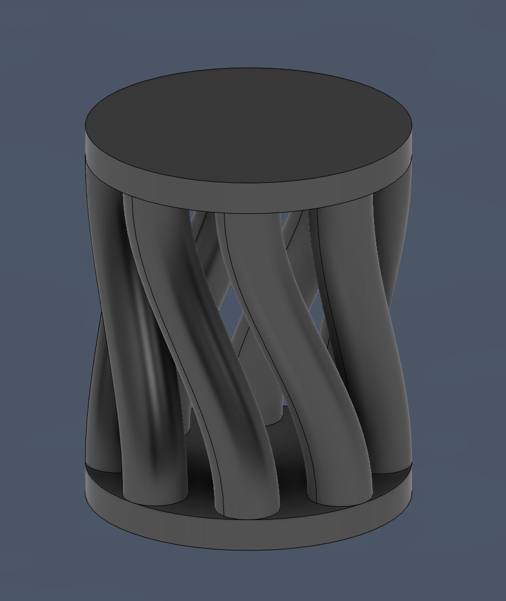
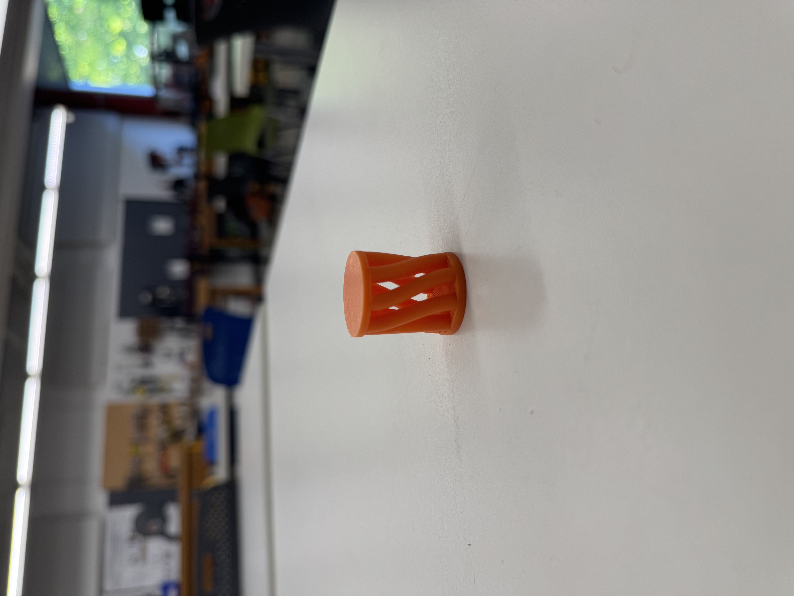

Our first assignment this week was to print something on the 3D printer that we couldn't make with our hand and the tools in the lab. So I decided to design a curvy shape on Fusion360.

This is the initial model.
After the model was printed it took me half an hour to remove the organic supports that were stuck in the middle of the model but I finally managed to clean it up.

This is the final product.
This assignment was important for me because I plan to use the 3D printer a lot for my final project and with this assignment I printed a object that had strange supports and I practiced how to get them out. Now I am confident that I can pull off any print and I really look forward to using the 3D printer again for my final project.
The other assignment for this week was to use the photogrammetry to scan an object and get familiar with the app. I chose to scan an empty diet coke bottle that was sitting in our dorm and I thought it would take 5 minutes maximum but it turned out to be a 30 minute process. In the end I had a really good model and I was quite surprised with how it turned out.
Loading 3D model...
This is the download link to the 3D Diet Coke model I captured with the photogrammetry app.
The current state of the final project is kind of blurry right now. I decided to go with the paper shredder because that idea felt the most original out of all of them. There is right now two big problems that cause this bluriness regarding my final project. The first one is the destruction of the paper that is not needed. I am between making a shredder with a box-knife type blade and a mechanism with cogs that make a stick go straight up and down. The other option is to make a crusher that crushes the paper into a paper ball and the paper falls down through a funnel. The other problem is how I will get 1 paper each time from the pile of paper. If I can figure these two problems out I can start to work on the project and it will be much easier to visualize.
I was not satisfied with the box that I built in the second week and thats why I never even glued it. So with all of the assignments piling up, I needed a solid box to contain all of my stuff from the assignments. So I loaded up Rhino and this time I made no mistakes while designing the box and now it looks much better and the QR actually works this time!